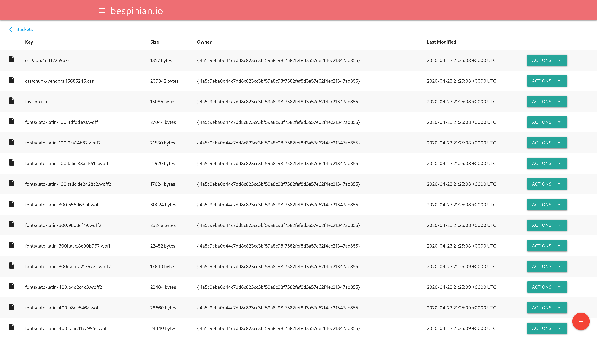

Go 开源项目推荐：一个简单的 Go 练手项目
大家好，我是 polarisxu。
Go 语言中文网微信群时不时有人问，有没有练手项目推荐。实话说，公众号陆续推荐过不少，但大家更擅长及时问，而不是找找。今天看到一个开源项目，值得学习了 Go 语言，但没有实战过的人练练手。
项目地址：https://github.com/cloudlena/s3manager，这是一个 Web 项目，通过 Web GUI 管理 S3 buckets。你可以基于这个项目开发自己的管理阿里 buckets 或七牛 buckets 等。

主要功能
该项目实现了如下功能：
- 列出你账号的所有 buckets
- 创建一个新的 bucket
- 列出某个 bucket 中的所有对象
- 将新对象上传到 bucket
- 从 bucket 下载对象
- 删除 bucket 中的对象
第三方依赖
该项目主要使用了下面两个第三方库：
- github.com/gorilla/mux：没有使用 net/http，而是使用了这个路由库，也没有使用 gin、echo 之类的框架
- github.com/spf13/viper：配置管理库。该项目的配置是通过环境变量设置的，环境变量通过 viper 读取
此外，就是基于 S3 的 SDK。
3、核心设计
简单介绍下该项目的核心设计。
1）前后端分离。
API 接口使用 RESTful 风格，例如：
r.Handle("/api/buckets/{bucketName}/objects", s3manager.HandleCreateObject(s3)).Methods(http.MethodPost)
前端基于 jQuery。
2）使用 Go1.16 的 embed
静态资源，包括模板和 css/js，通过 embed 嵌入最终的二进制文件中，使得编译后只需一个二进制文件即可运行，部署方便。
3编写了 Dockerfile
方便通过 Docker 部署。
4、总结
这个项目功能比较简单，作为练手比较合适。建议新手可以参照这个项目，申请一个 S3 或国内的对象存储，实现自己的一个 bucket 管理系统。